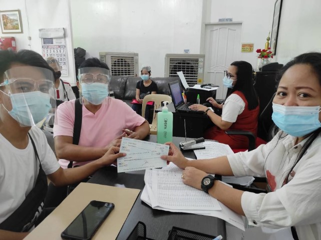
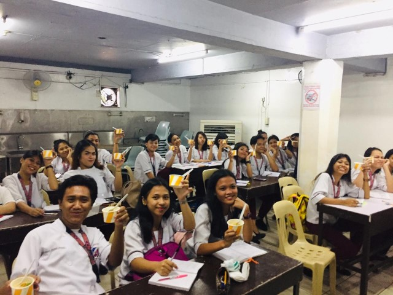

OUR FACULTY
Are the most competent and seriously dedicated in the academic progress of its students. Mastery of the subject and technical expertise in conjunction with ingenious practical application scenarios continuously challenge its students into striving for proficiency and excellence in their chosen fields.

UNIFAST 2020
UNIFAST 2020
- Access Unifast Program

ACADFEST 2017
- Access Computer College Academic Festival 2017.
